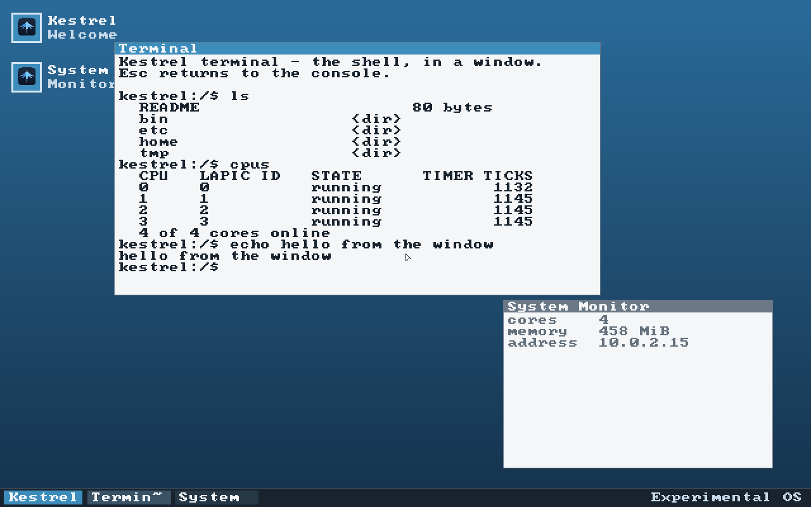
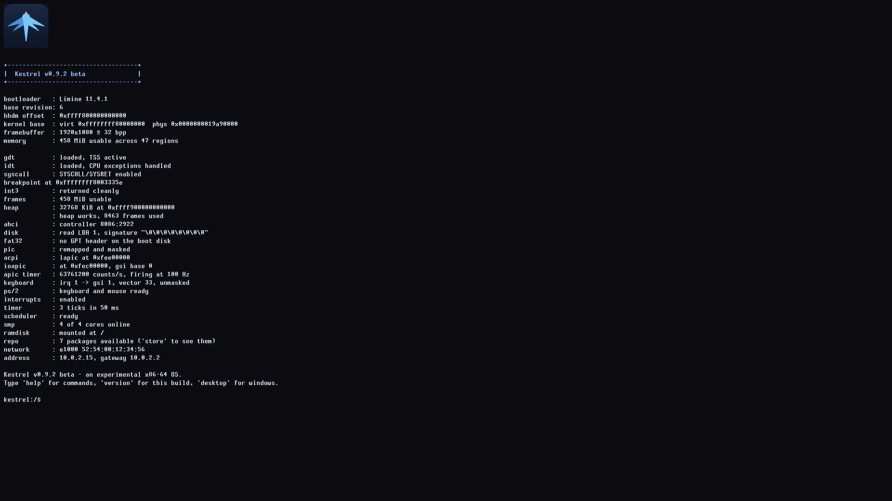
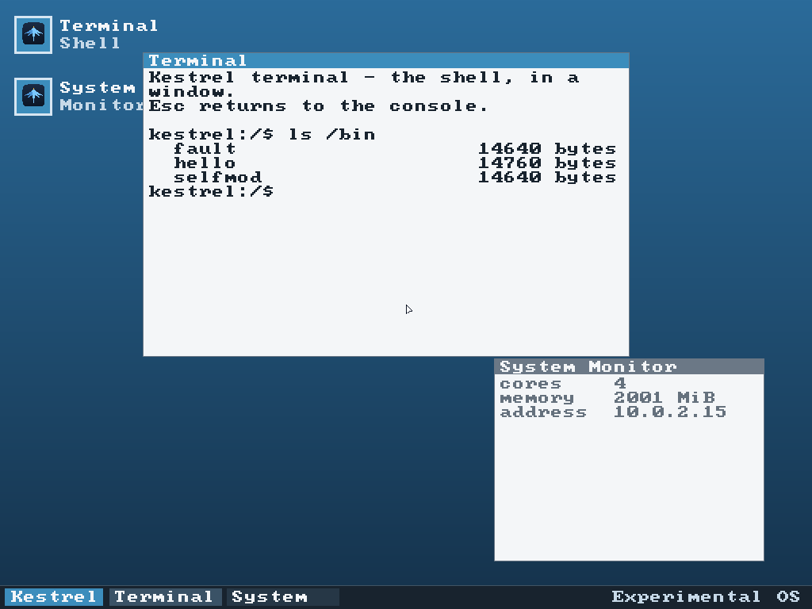

Kestrel is an x86-64 operating system built from nothing but the Rust language and the hardware manuals. There is no libc, no borrowed drivers and no kernel underneath — it talks to the framebuffer, the keyboard, the disk controller and the network card itself, in its own code.
It boots as a UEFI application through
Limine, brings up
its own page tables and heap, schedules preemptively across every core,
runs ELF programs in ring 3 behind a syscall interface,
reads and writes a real FAT32 disk, speaks TCP/IP, and draws a windowed
desktop — with a shell that runs equally well on the console or inside a
window.



Any virtual machine will do, with two settings: UEFI firmware (there is no legacy BIOS boot path) and Secure Boot off (Limine is not signed).
/disk is absent and nothing survives a reboot.
It boots straight into the desktop. F1 opens the launcher,
which lists every program in the repository and opens any of them —
installing first anything that is not there yet. Esc drops you
to the console, and desktop brings the desktop back.
Every release ships SHA256SUMS, and the build is reproducible:
cloning the repository and running the release script produces images whose
hashes match the published ones exactly. A truncated download otherwise
looks identical to a kernel that fails to boot.
UEFI boot via Limine, framebuffer console, serial logging, per-core GDT and TSS with IST stacks, and handlers for every CPU exception.
A physical frame allocator with an intrusive free list, kernel page-table ownership, a 32 MiB heap, and a separate address space per process.
Preemptive scheduling on every core, an ELF loader, ring 3 through SYSCALL/SYSRET, and W^X enforced with the NX bit — a program that rewrites its own code is killed.
ACPI table parsing to find the APICs, a local APIC timer calibrated against the PIT to 100 Hz, I/O APIC routing, and PS/2 keyboard and mouse.
PCI enumeration, an AHCI (SATA) driver using polled DMA, GPT parsing, and read-write FAT32 with long filenames. Files survive a reboot.
An e1000 driver with its own descriptor rings, plus ARP, IPv4, ICMP, UDP, DNS and a client TCP. fetch retrieves a real page off the internet.
A compositor with draggable, closable windows, a panel and a searchable launcher that opens any program in the repository — installing first anything not installed yet — reachable by F1, the mouse wheel or the keyboard. Region-based damage tracking means an idle screen costs nothing.
Write a script in the editor and run it with the built-in interpreter, or draw with the mouse in paint. Programs get a window from the kernel and push pixels to it.
Kestrel replaces its own kernel and packages from inside itself, keeping the previous kernel and offering it in the boot menu if the new one misbehaves — from any medium, even a read-only CD, where the source is remembered in RAM instead of on disk.
Nothing ships installed. The boot media carries a repository, and the launcher — or the Software window — installs and runs from it, to disk where there is one and to RAM where there is not.
A Settings window with presets, toggles and steppers that apply as you click them. Every colour and most of the layout is yours, and it is kept across reboots.
Around thirty commands with real line editing — arrows, home and end, delete — and command history, on the console or in a window.
Written plainly, because you will meet these:
https:// is out of reach — and fetch is a client, not a browser. Nothing renders HTML.fork, and no task migration between cores. Tasks are pinned where they spawn.
Rust nightly with the x86_64-unknown-none target, and QEMU to
run it. Nightly is required rather than preferred:
abi_x86_interrupt is still unstable.
git clone https://github.com/AverageCodeNerd/Kestrel.git cd Kestrel cargo xtask run
That builds the kernel, stages an EFI system partition and boots it in QEMU
with four cores and networking. cargo xtask image --release
produces the bootable .img, .vhd and
.iso.
Note the xtask: a bare cargo build at the
workspace root builds the host-side build driver, not the kernel.